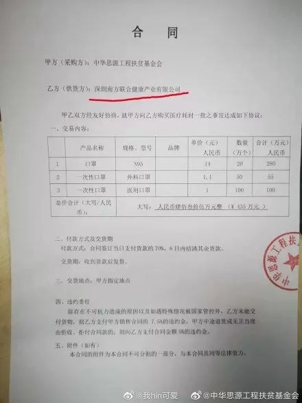

20万只口罩泰国扫货记 - 经济观察网 － 专业财经新闻网站
原文链接 备份链接 图片:首批支援口罩运装完成，将送往合肥 受访者张进/摄 经济观察网 记者 阿茹汗 1月29日，当地时间5点45分，春秋航空9C8574次航班从泰国首都曼谷准时起飞，它的目的地是安徽省合肥市。 在机场外，送完机的张进终于 …

出品|网易清流工作室
作者|刘亚丹 主编|赵妍
爆料邮箱：
stoolpigeon@service.netease.com
没有购销N95资质的口罩供应商，出现在一家基金会供货合同中。不是口罩生产商，曾因医疗器械违规被处罚，口罩采购价格还被指高于市场价格。看似不合理背后，这家“口罩供应商”回复清流工作室称：“我们没有卖口罩给基金会，我们不做口罩。”
1月30日，湖北省红十字会公布的一张银行卡信息引起了各方关注，该银行付款回单中，将收款人开户行“中国银行北京幸福广场支行”中的“支”行写为“之”行。一时间，被指为假P图银行卡转账信息。此外，该电子回单中公示的金额，与收款方中华思源工程扶贫基金会对外公示的金额相差20万。
与此同时，该银行卡收款方中华思源工程扶贫基金会（以下简称:”思源基金会”)也引起大众关注。网易清流工作室注意到，这家基金会五年累积捐赠收入比公益支出多1.83亿元，除了公益支出，该基金会还是一家风险投资公司的股东。
1月26日，思源基金会官微公告称，第一期项目善款共计435万元物资于近日发出，并且在附件中公布了拟采购口罩的合同，包括20万个N95口罩、50万个一次性外科口罩和100万个一次性医用口罩，合计170万个口罩。
但是清流工作室联系到思源基金会披露的口罩供应商——深圳南方联合健康产业有限公司，该公司回复称：“我们没有卖口罩给基金会，我们不做口罩。”值得注意的是，思源基金会公开的的口罩采购合同中，只有思源基金会一方的盖章，无深圳南方联合健康产业有限公司的盖章和签字。
此外，思源基金会公开合同中供应商的地址——深圳市罗湖区南湖街道嘉宾路太平洋商贸大厦B座22L单元，与深圳南方联合健康产业有限公司公开的工商注册地址也完全吻合。清流工作室随后再次联系到深圳南方联合健康产业有限公司法人代表及100%股权控制人陈晓东，陈晓东回复称：“我们做医疗设备”，不卖口罩，更不卖N95口罩。
清流工作室多次联系思源基金会核查上述信息，该基金会工作人员称不清楚上述情况，推荐联系基金会宣传部门。截止发稿前，该基金会宣传部门电话，一直处于占线状态。思源基金会26日发布的官方微博称，“正在与医疗物资供货方签署购买协议”，因供货方在异地，待双方合同盖章完后进一步公示。但是在物资紧急的疫情期，截止到1月30日晚，该基金会未做该合同的进一步公示。


（图片来自中华思源工程扶贫基金会官方微博）
蹊跷的口罩捐赠合作方
武汉新型肺炎病毒疫情中，中华思源工程扶贫基金会对外接收了众多明星的捐款。公开资料显示，截止1月28日上午，中华思源工程扶贫基金会公布了61位明星的捐款名单，可见名单中主要有黄晓明、杨颖、吴京、谢楠、管虎、梁静、张大大、井柏然等61人，截至1月27日23时59分演艺界爱心明星捐款共计1326.2万。
1月26日，思源基金会官微公告称，第一期项目善款共计435万元物资于近日发出，并且在附件中公布了拟采购口罩的合同，包括20万个N95口罩、50万个一次性外科口罩和100万个一次性医用口罩。
但是公开信息显示，思源基金会的口罩供货商——深圳南方联合健康产业有限公司没有购销N95口罩的资质，也不是口罩直接生产商，而是医疗器械的销售方。这家公司还曾经因为医疗器械违法，2018年被深圳罗湖食品药品监督管理局处罚。市场关于深圳南方联合健康产业有限公司的新闻，也多是医院大型医疗器械的合作中标方。
按照市场供销规律，口罩的生产商才更可能提供最低的价格。天眼查显示，深圳南方联合健康产业有限公司的行业属性属于软件和信息服务业，主经营范围是医疗器械的销售和健康产业投资，没有口罩的生产资质。此外，该公司的经营范围是一类医疗器械的购销，但是N95口罩属于“二类依赖器械”，也就是说该公司并没有购销N95口罩的资质。
思源基金会对外称，合同中的单价，为多方联系询价比价后选定，选择物资符合疫区使用标准。根据基金会公开的合同显示，当次购买的外科口罩单价为1.1元。一位医疗器械销售行业人士告诉清流工作室，“这个价格相对目前市场偏高，但是也在正常范围内。”
捐赠收入比公益支出多1.83亿元 基金会被多次起诉
网易清流工作室注意到，思源基金会五年累积捐赠收入比公益支出多1.83亿元。多余的钱流向何处？

清流工作室查到，思源基金会是中国风险投资公司的股东，2015年曾出资1000万购入中国风险投资公司5%股份。值得注意的是，同年，中国风险投资公司曾经因为提供了不真实的统计资料，被北京市朝阳区统计局处罚。
此外，该基金会还因为曾经的一项公益惠民项目被多位自然人起诉。
2014年4月，四川惜净实业有限公司法定代表人吴自刚与中央民建下属中华思源工程扶贫基金会取得联系，并于同年6月签订合作协议，成立了”中华思源工程扶贫基金会净爱公益基金”（以下简称”净爱基金”），吴自刚任“思源净爱基金”的管委会主任。
2014年8月12日四川民建主办惠民洗衣启动，惠民洗衣在四川省开展工作为60岁以上老人免费洗衣，15岁以下儿童免费洗衣，为残疾人士，伤残军人免费洗衣，免费为享受政策内的人员发放洗衣粉，肥皂，衣物等物品。“净爱公益基金”对外宣称，从事洗涤联盟的各地服务站站长，对特定贫困人群的免费洗衣服务，基金管委会按扶助补贴标准提供洗衣服务补贴。
但是吴自刚后迫于债务压力，在未获正式授权的情况下，冒用”净爱基金”管委会资质，伪造公章和授权文件，篡改与中华思源工程扶贫基金会的协议内容，虚构可获得”净爱基金”拨款的”惠民洗衣”公益项目擅自招募加盟商，并向加盟的代理商和服务站收取高额”保证金”共计人民币1480余万元，致使惠民洗衣各地投资人，各服务站损失惨重。截止到2019年10月，网络上还有因该项政策亏损的投资人投诉信息。
刘亚丹是清流工作室高级作者，常驻广州。
网易清流工作室（微信号：wangyiqingliu）出品，未经授权禁止转载。清流工作室是网易财经旗下原创财经调查团队，更多内容欢迎关注微信公众号。
往期精彩回顾

原文链接 备份链接 图片:首批支援口罩运装完成，将送往合肥 受访者张进/摄 经济观察网 记者 阿茹汗 1月29日，当地时间5点45分，春秋航空9C8574次航班从泰国首都曼谷准时起飞，它的目的地是安徽省合肥市。 在机场外，送完机的张进终于 …
原文链接 备份链接 成长究竟让我们更勇敢还是更胆小？作家远子给出的答案更接近后者。在这次新型冠状病毒疫情中，人在湖北黄冈的远子不仅要照护好自己，还要承担一个丈夫、父亲的责任。随着当地道路封锁，就连给孩子买一罐奶粉，也变得如登天般困难。四 …
原文链接 备份链接 在疫情防控的持续压力下，口罩的供给，尤其是防疫一线的供给情况依然紧绷。这背后既有制约企业生产的原料问题，民众也存在过度追求N95等专业口罩的误区，更有人借机囤积居奇，乃至造假售假。 全文3748字，阅读约需5.5 …
原文链接 备份链接 来源：腾讯新闻《潜望》 栏目 作者：张珺 从北上广深等城市筹集善款到口罩、防护服发放到医生护士手中，需要经历多少难关？ 1月初开始新型冠状病毒席卷中国，商业公司、基金会、普通民众、海外华侨留学生，捐赠速度空前。包括企业 …
原文链接 备份链接 29.01.2020本文字数：1469，阅读时长大约2.5分钟 导读：非武汉地区确诊新型肺炎病例已经达到1649例，占湖北全省确诊病例比重近半（约46%），占全国比重达28%。 作者 | 第一财经 项真 湖北省新型肺 …